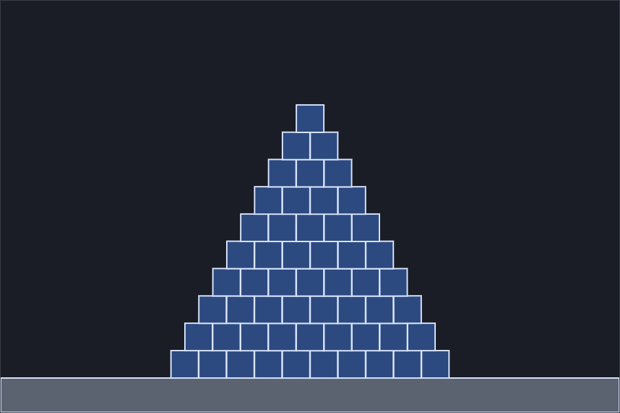
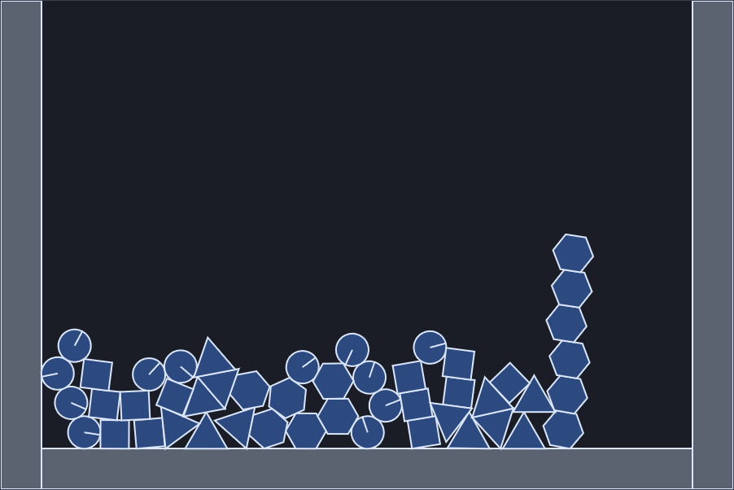
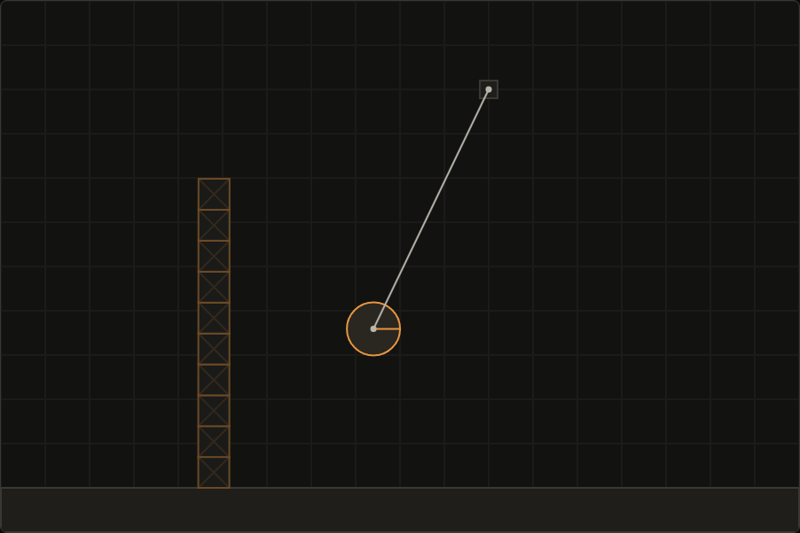
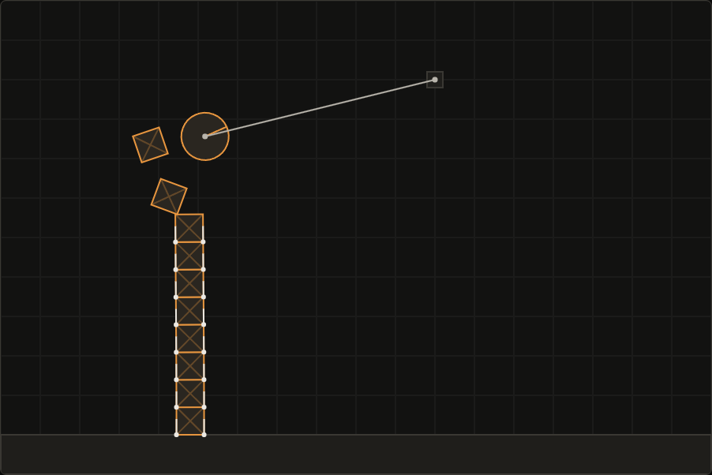
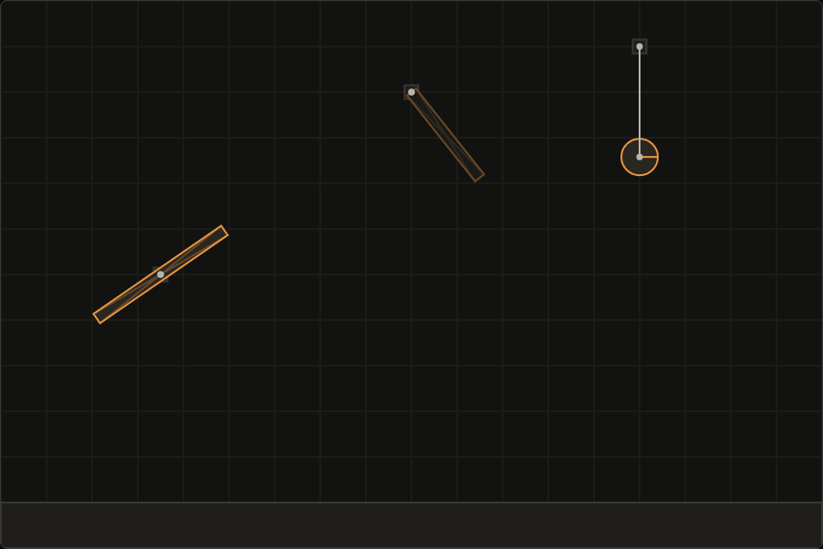

building a 2d physics engine from scratch
Impulse is a 2D rigid body physics engine I wrote from scratch in TypeScript, with no physics libraries: no Matter.js, no Planck, no Rapier. it simulates circles, boxes and convex polygons that collide, stack, fall asleep, get pinned together with joints and get grabbed with the mouse. it runs in the browser, has zero runtime dependencies, and the whole demo is about 36 kB of JavaScript.
my map was Erin Catto's Box2D Lite: sequential impulses, warm starting, accumulated impulse clamping. I used it for the ideas and wrote every piece to fit this codebase, then tried to prove each piece against something other than itself. most of this post is about that second part.
try it: live demo · benchmark page · source · raw numbers
the rules I set first
four rules before any physics: a fixed 1/60 s timestep, a deterministic engine (no Math.random), no allocations in the hot paths, and an engine that never touches the DOM or the canvas. the first one is the one that bites, so it lives in one small class.
// FixedStepper: the only place frame time is allowed to exist
advance(frameSeconds: number): number {
this.accumulator += Math.min(frameSeconds, MAX_FRAME_SECONDS);
let steps = 0;
while (this.accumulator >= FIXED_DT) {
this.world.step(FIXED_DT);
this.accumulator -= FIXED_DT;
steps++;
}
return steps;
}the browser gives you a different frame time on every frame, and the engine never sees it. the accumulator turns frame time into whole fixed steps, and a long frame (a background tab, a breakpoint) is capped at 0.25 s so catching up cannot spiral. the test feeds the same simulation frames at 30, 60 and 144 fps and as an uneven sequence, and requires each result to match plain manual stepping of the same number of steps, bit for bit.
twelve stages
I built it in stages and did not start the next one until the current one had green tests and a working demo:
| stage | what it added | how it was proven |
|---|---|---|
| 1 | circles and boxes, semi-implicit Euler, fixed timestep, canvas renderer, drag-and-drop spawning | free fall matches the analytic result; frame rate never changes the outcome |
| 2 | SAT collision detection and contact manifolds | known overlaps give the exact normal, depth and points; swapping bodies flips the normal |
| 3 | impulse solver: friction, restitution, clamped accumulated impulses | boxes come to rest; elastic collisions conserve energy to 1e-9 |
| 4 | warm starting, persistent contacts, sleeping | a 10-box tower stands 10 s; reruns are bit-identical |
| 5 | spatial hash broadphase | same pairs as brute force, five cell sizes |
| 6 | pin and rod joints | pendulum period within 2% of the physics formula |
| 7 | benchmark page, GitHub Pages deploy | the built site uses only base-aware URLs |
| 8 | convex polygons | agrees with the box code on 4,000 random pairs |
| 9 | block solver, sequential position correction, continuous collision | 20-box towers stand and sleep; bullets stop at thin walls |
| 10 | joint limits, motors, springs, ropes, mouse joint | spring frequency and deflection match theory |
| 11 | interactive demo: scenes, grabbing, pause, step, reset | every scene simulates cleanly |
| 12 | pre-commit hook, CI, browser tests | 14 tests drive the built site in Chrome |
what it looks like





the numbers
stacking
the most useful thing I did was not obvious at first. tall stacks jittered: a 10-box tower stood, but kept moving at roughly 9 cm/s and did not fall asleep at 10 solver iterations. more iterations helped slowly and not even reliably: 60 iterations was worse than 40. as far as I can tell, two things were wrong. every box rests on two contact points, and solving them one after the other lets the pair rock. and my position correction pushed every contact apart at the same moment, so a stack's shared compression cancelled itself out and never went away.
the fix was a 2-point block solver, which solves both points of a contact together as a tiny problem with four cases (both pushing, either one alone, neither), plus a position correction that runs contact by contact so each one sees the shifts of the last.
time until every body in the tower is asleep. the tests stop at 20 s.
the block solver is also much less sensitive to the iteration count. time until sleep, by iterations:
| iterations | 10-box tower | 20-box tower |
|---|---|---|
| 6 | 1.1 s | collapsed |
| 8 | 0.9 s | 3.0 s |
| 10 | 0.9 s | 2.4 s |
| 15 | 0.7 s | 1.7 s |
| 20 | 0.7 s | 1.4 s |
| 30 | 0.6 s | 1.0 s |
at 6 iterations the 20-box tower collapses. from 8 up it stands and sleeps, so 10 (the Box2D Lite default) has some margin.
step time
| scene | bodies | avg ms | p95 ms | max ms | peak contacts | awake at end |
|---|---|---|---|---|---|---|
| Pyramid, 210 boxes | 210 | 0.86 | 1.10 | 1.50 | 403 | 210 |
| Pyramid, 210 boxes, sleeping on | 210 | 0.29 | 0.90 | 1.20 | 403 | 0 |
| Pile, 500 bodies | 500 | 1.47 | 1.80 | 2.50 | 986 | 500 |
| Pile, 500 bodies, sleeping on | 500 | 1.39 | 1.70 | 2.00 | 986 | 500 |
| Pile, 1000 bodies | 1000 | 2.59 | 3.90 | 4.70 | 2116 | 1000 |
these are full World.step calls: contacts, solver, integration and sleeping. 1,000 awake bodies cost 2.6 ms of a 16.7 ms frame. sleeping is worth a lot when it works: the pyramid drops from 0.86 ms to 0.29 ms once it is asleep. it does not work everywhere. the 500-body pile never falls asleep in the 8 seconds I measured, so its two rows are the same.
broadphase
| bodies | overlapping pairs | spatial hash | brute force | speedup |
|---|---|---|---|---|
| 250 | 123 | 0.03 ms | 0.12 ms | 4.4× |
| 500 | 251 | 0.05 ms | 0.38 ms | 7.7× |
| 1000 | 488 | 0.10 ms | 1.48 ms | 14.8× |
| 2000 | 980 | 0.27 ms | 6.05 ms | 22.4× |
| 4000 | 2064 | 0.60 ms | 25.70 ms | 42.5× |
the broadphase is a spatial hash. for 4,000 bodies it takes 0.6 ms, and testing every pair takes 25.7 ms, about 42 times slower. the gap grows with body count because one is roughly linear and the other is quadratic. both find exactly the same pairs, and the benchmark page checks that on every run.
how to read these numbers: production build, headless Chrome 153 driven by Playwright, Windows 11, AMD Ryzen 7 5800X. one machine, timer resolution 0.1 ms, and two runs differed by up to about 12% (the pyramid), usually by less.
the "before" tower times come from an earlier solver setup (30 iterations, no block solver), so that chart compares the whole change, not one part of it. the same goes for the step times: they dropped by roughly four times after the change, but I changed the iteration count and the browser mode at once, so I can't credit either one alone. it went from 3.3 ms to 0.86 ms for the pyramid, and from 10.4 ms to 2.6 ms for 1,000 bodies.
how I checked it's right
a physics engine can look right and be wrong, so most tests compare against something independent of the code they test:
| claim | what it is checked against |
|---|---|
| free fall | the analytic formula, the exact semi-implicit Euler sum, and the first-order error bound between them |
| elastic collisions | conservation of momentum and energy, to 1e-9 |
| pendulum | the period of a physical pendulum, within 2% |
| spring | the static deflection g/ω² and the requested frequency |
| polygon collision | the older box-box code on 4,000 random pairs, and a second distance computation on 3,000 random circle-polygon pairs |
| broadphase | a brute-force pair loop using independently computed bounds, at five cell sizes |
| tunneling | the same shot with continuous collision off, which must tunnel, so the setup itself is proven |
| determinism | two runs compared bit for bit, sleep flags included |
then I sabotaged the code on purpose and checked that the tests noticed. a test that has never failed hasn't proven anything.
| part | what I broke | tests that failed |
|---|---|---|
| polygon clipping | picked the wrong incident edge | 10 of 24 |
| circle vs polygon | removed the corner region | 3 of 24 |
| block solver | accepted negative (pulling) impulses | 3 of 26 |
| block solver | never paired the two contact points | 5 of 26 |
| broadphase | grid cells only one column wide | 11 of 12 |
| joint limit | dropped the lower limit | 1 of 27 |
| rope | let it push like a rod | 2 of 27 |
| spring | dropped the spring bias | 2 of 27 |
| motor | ignored the torque cap | 2 of 27 |
| joints and sleep | stopped waking joint partners | 1 of 11 |
| deploy | base path "/" instead of "/impulse/" | 1 of 2 |
the sabotage and the ordinary failures turned up problems on both sides. several times a test failed because my test was wrong, not the engine: a vector helper mutated its input and broke my "is the point inside" oracle, and a test expected a bullet to stop against a small circle that it only grazed, when a glancing hit should deflect it. and one test found a real bug: removing a joint left a sleeping body asleep in mid-air, so removing a joint now wakes its bodies.
what it still can't do
a pile of 500 mixed bodies never falls asleep in the time I measured, so sleeping helps stacks and pyramids but not big chaotic piles.
continuous collision only stops bodies at static geometry. two fast dynamic bodies can still pass through each other.
a ball bouncing under gravity comes back about 3.5% too high at 1/60 s, because gravity is added before the impact is solved. I believe Box2D does the same. collisions without gravity are exact.
determinism was only checked on one machine's Node and Chrome. other browsers or CPUs may differ in Math.sin and Math.cos. and "no allocations in the hot paths" is a design goal that no test enforces.
the source, the tests and the benchmark are in the repo, and the demo lets you drop shapes in and grab them with the mouse.